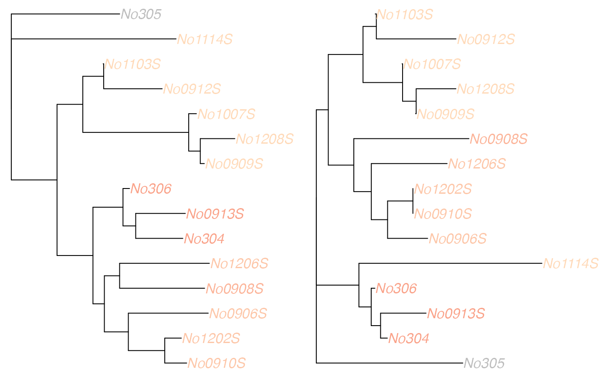

Finds the geometric median of a set of trees according to the Kendall Colijn metric.
medTree(
x,
groups = NULL,
lambda = 0,
weights = NULL,
emphasise.tips = NULL,
emphasise.weight = 2,
return.lambda.function = FALSE,
save.memory = FALSE
)A list of trees of the class multiPhylo, for which the median tree will be computed,
OR a matrix of tree vectors as given by treespace$vectors.
an optional factor defining groups of trees; if provided, one median tree will be found for each group.
a number in [0,1] which specifies the extent to which topology (default, with lambda=0) or branch lengths (lambda=1) are emphasised. This argument is ignored if return.lambda.function=TRUE or if the vectors are already supplied as the object x.
A vector of weights for the trees. Defaults to a vector of 1's so that all trees are equally weighted, but can be used to encode likelihood, posterior probabilities or other characteristics.
an optional list of tips whose entries in the tree vectors should be emphasised. Defaults to NULL.
applicable only if a list is supplied to emphasise.tips, this value (default 2) is the number by which vector entries corresponding to those tips are emphasised.
If true, a function that can be invoked with different lambda values is returned.
This function returns the vector of metric values for the given lambda. Ignored if the tree vectors are already supplied as the object x.
A flag that saves a lot of memory but increases the execution time (not compatible with return.lambda.function=TRUE). Ignored if the tree vectors are already supplied as the object x.
A list of five objects:
$centre is the "central vector", that is, the (weighted) mean of the tree vectors (which typically does not correspond to a tree itself);
$distances gives the distance of each tree from the central vector;
$mindist is the minimum of these distances;
$treenumbers gives the numbers (and, if supplied, names) of the "median tree(s)", that is, the tree(s) which achieve this minimum distance to the centre;
$trees if trees were supplied then this returns the median trees as a multiPhylo object.
If groups are provided, then one list is returned for each group.
If return.lambda.function=TRUE then a function is returned that produces this list for a given value of lambda.
## EXAMPLE WITH WOODMICE DATA
data(woodmiceTrees)
## LOOKING FOR A SINGLE MEDIAN
## get median tree(s)
res <- medTree(woodmiceTrees)
res
#> $centre
#> [,1] [,2] [,3] [,4] [,5] [,6] [,7] [,8]
#> [1,] 4.034826 2.129353 5.522388 2.21393 3.820896 2.129353 2.20398 0.2338308
#> [,9] [,10] [,11] [,12] [,13] [,14] [,15] [,16]
#> [1,] 5.338308 4.422886 2.129353 3.343284 0 3.447761 2.199005 3.885572
#> [,17] [,18] [,19] [,20] [,21] [,22] [,23] [,24]
#> [1,] 2.303483 3.343284 2.199005 2.288557 0.1840796 3.855721 4.751244 2.199005
#> [,25] [,26] [,27] [,28] [,29] [,30] [,31] [,32]
#> [1,] 3.114428 0 3.358209 2.124378 2.825871 1.9801 4.079602 2.766169
#> [,33] [,34] [,35] [,36] [,37] [,38] [,39] [,40]
#> [1,] 0.1442786 2.124378 2.174129 4.621891 1.860697 0 1.965174 2.208955
#> [,41] [,42] [,43] [,44] [,45] [,46] [,47] [,48]
#> [1,] 4.0199 2.124378 2.199005 0.2338308 6.373134 4.238806 2.124378 3.40796
#> [,49] [,50] [,51] [,52] [,53] [,54] [,55] [,56]
#> [1,] 0 3.492537 2.059701 2.825871 3.930348 0.04975124 2.208955 2.268657
#> [,57] [,58] [,59] [,60] [,61] [,62] [,63] [,64]
#> [1,] 2.825871 1.945274 0 2.044776 1.9801 2.049751 0.3432836 3.970149
#> [,65] [,66] [,67] [,68] [,69] [,70] [,71] [,72]
#> [1,] 3.318408 1.9801 4.731343 0 4.323383 2.766169 0.1442786 2.124378
#> [,73] [,74] [,75] [,76] [,77] [,78] [,79] [,80]
#> [1,] 2.174129 4.447761 1.860697 0 1.965174 0.039801 2.199005 2.258706
#> [,81] [,82] [,83] [,84] [,85] [,86] [,87] [,88]
#> [1,] 2.766169 1.935323 0 2.034826 0.2338308 0.1840796 0.1442786 0.3681592
#> [,89] [,90] [,91] [,92] [,93] [,94] [,95] [,96] [,97]
#> [1,] 0 0.3333333 4.18408 2.124378 3.378109 0 3.462687 2.174129 3.089552
#> [,98] [,99] [,100] [,101] [,102] [,103] [,104] [,105] [,106]
#> [1,] 0 3.268657 1.860697 0 1.965174 0 4.412935 0 1
#> [,107] [,108] [,109] [,110] [,111] [,112] [,113] [,114] [,115] [,116]
#> [1,] 1 1 1 1 1 1 1 1 1 1
#> [,117] [,118] [,119] [,120]
#> [1,] 1 1 1 1
#>
#> $distances
#> [1] 2.773836 3.267149 6.944172 14.673991 7.133596 7.836808 18.676418
#> [8] 3.222686 2.773836 3.222686 3.168193 13.048994 16.296007 3.346883
#> [15] 7.905388 8.030888 6.355367 8.130321 15.600505 3.911666 7.922676
#> [22] 15.927311 7.341197 4.443973 4.127042 8.430142 13.493416 4.127042
#> [29] 16.533025 14.685853 8.787295 5.989845 7.348648 17.342830 15.618513
#> [36] 5.495148 16.802411 5.764675 5.219809 7.458851 3.065234 7.391513
#> [43] 6.969203 10.828268 4.868176 7.643007 15.797306 7.367580 11.821964
#> [50] 4.056521 13.132037 6.944172 16.827709 3.168193 17.153177 6.964918
#> [57] 5.313330 2.773836 7.954012 15.042647 16.435389 3.967861 15.693191
#> [64] 6.615047 5.192574 11.586904 17.860227 9.123129 7.391850 4.223558
#> [71] 6.654041 11.494218 2.773836 16.305163 4.301757 10.385008 5.970711
#> [78] 4.328850 7.348309 13.786309 5.811092 4.938692 9.103476 5.917563
#> [85] 17.524330 2.773836 8.430142 16.348281 4.903308 5.463368 3.346883
#> [92] 6.723586 4.127042 16.533326 3.772463 17.924597 4.277982 6.042769
#> [99] 6.606768 5.228380 16.982655 13.589491 17.607739 7.964326 13.087636
#> [106] 7.855197 9.698317 5.625779 5.142994 8.505347 5.989845 13.196850
#> [113] 8.268964 7.297695 13.414281 7.371968 6.399443 2.773836 3.065234
#> [120] 7.665756 4.469091 4.441173 3.121525 8.360511 4.301757 6.018846
#> [127] 3.168193 5.362263 7.417382 17.581017 8.473702 13.285148 12.331759
#> [134] 2.946055 3.977253 7.490135 2.773836 4.759660 2.835917 6.754960
#> [141] 3.168193 15.034873 4.903308 9.580642 4.455712 3.517920 7.926757
#> [148] 3.772463 8.462245 10.901533 4.903308 9.417230 8.330704 5.142994
#> [155] 7.904759 4.185694 4.261670 7.984602 2.835917 3.465198 3.414578
#> [162] 7.463519 6.553085 3.124711 16.092631 7.514671 4.420963 7.901611
#> [169] 4.056521 17.366911 6.553085 4.020796 13.087636 3.955931 7.653090
#> [176] 10.056440 5.989845 11.800271 8.430142 11.586904 5.989845 2.946055
#> [183] 16.103448 4.684327 18.967048 5.625779 16.678482 4.872773 8.573512
#> [190] 3.267149 3.334970 4.047312 6.018846 3.168193 6.061676 8.339658
#> [197] 15.080634 16.982655 19.075854 7.348309 10.691403
#>
#> $mindist
#> [1] 2.773836
#>
#> $treenumbers
#> [1] 1 9 58 73 86 118 137
#>
#> $trees
#> 7 phylogenetic trees
#>
## plot first tree
med.tree <- res$trees[[1]]
plot(med.tree)
## LOOKING FOR MEDIANS IN SEVERAL CLUSTERS
## identify 6 clusters
groves <- findGroves(woodmiceTrees, nf=3, nclust=6)
## find median trees
res.with.grp <- medTree(woodmiceTrees, groves$groups)
## there is one output per cluster
names(res.with.grp)
#> [1] "1" "2" "3" "4" "5" "6"
## get the first median of each
med.trees <- lapply(res.with.grp, function(e) ladderize(e$trees[[1]]))
## plot trees
par(mfrow=c(2,3))
for(i in 1:length(med.trees)) plot(med.trees[[i]], main=paste("cluster",i))
## highlight the differences between a pair of median trees
plotTreeDiff(med.trees[[1]],med.trees[[5]])
